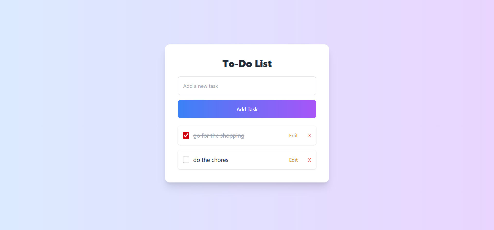
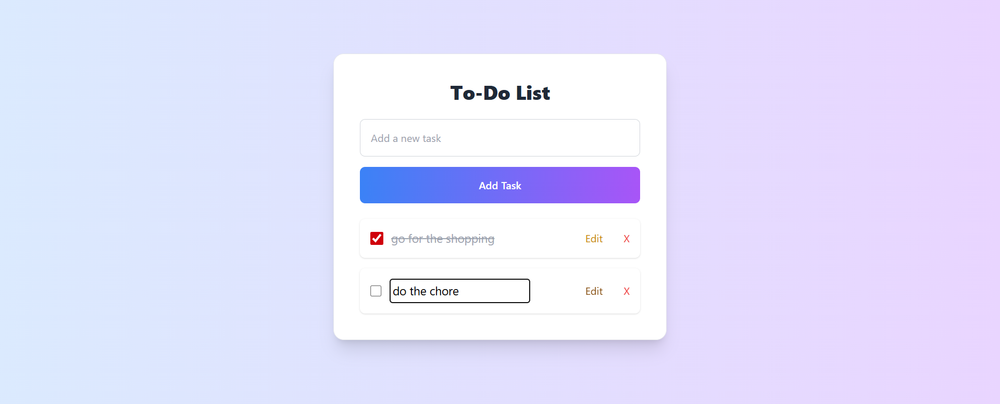
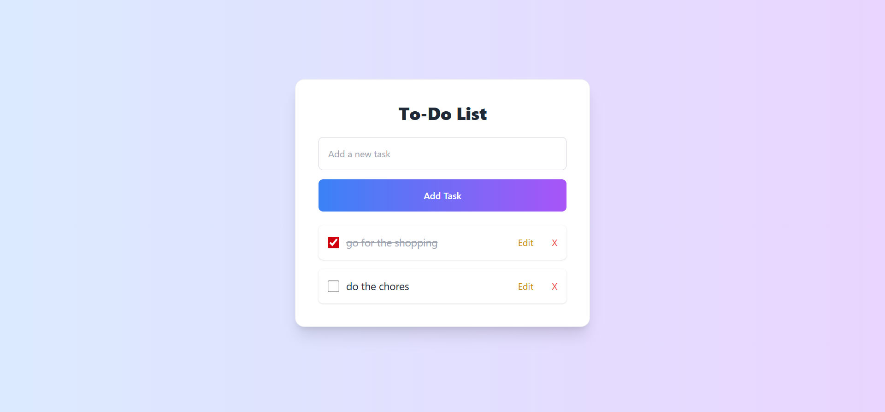
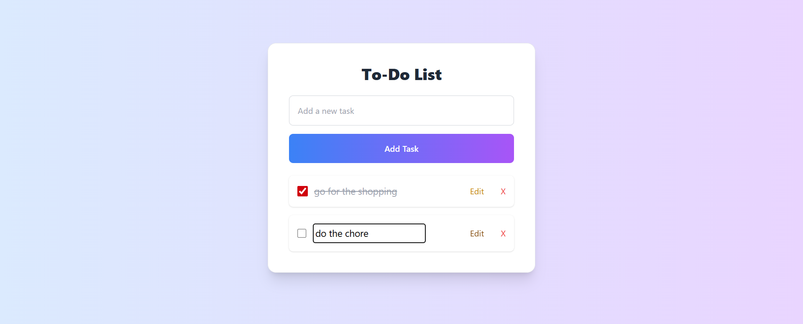

Todo List
This To-Do List Application is a responsive and user-friendly task management tool built using HTML, Tailwind CSS, and JavaScript, designed to help users stay organized with ease. It provides core functionalities such as adding new tasks, editing existing ones, deleting unwanted tasks, and marking tasks as completed for better progress tracking. All task data is stored in local storage, ensuring that the list remains intact even after refreshing the page or closing the browser. The interface is clean, modern, and fully responsive, enhanced with smooth animations and hover effects powered by Tailwind CSS, making it both visually appealing and easy to navigate. With its minimalist design and efficient functionality, this project is perfect for practicing JavaScript DOM manipulation, event handling, and styling with Tailwind, while offering a practical tool for daily productivity.
Technologies
- HTML5, CSS3, JavaScript, Tailwind CSS